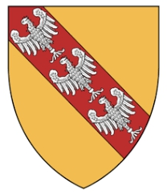

3150515941516 Kejsare Lothaire I of Franken
Tysk-Romersk kejsare, Kung av Italien. Blev högst 60 år.

Född:
795 Ingelheim, Rheinland-Pfalz, Germany. [1]
Död:
855-09-29 Prum, Rheinland-Pfalz, Germany. [1]
Barn:
Personhistoria
795
Födelse 795 Ingelheim, Rheinland-Pfalz, Germany
[1]
855
Död 855-09-29 Prum, Rheinland-Pfalz, Germany
[1]
Källor